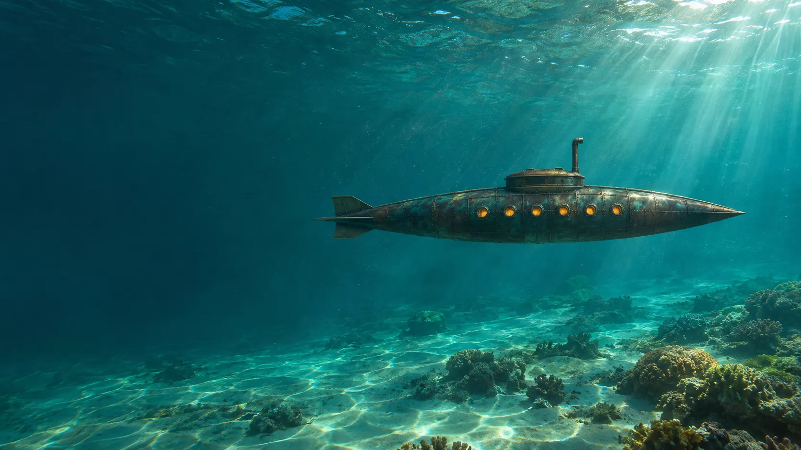
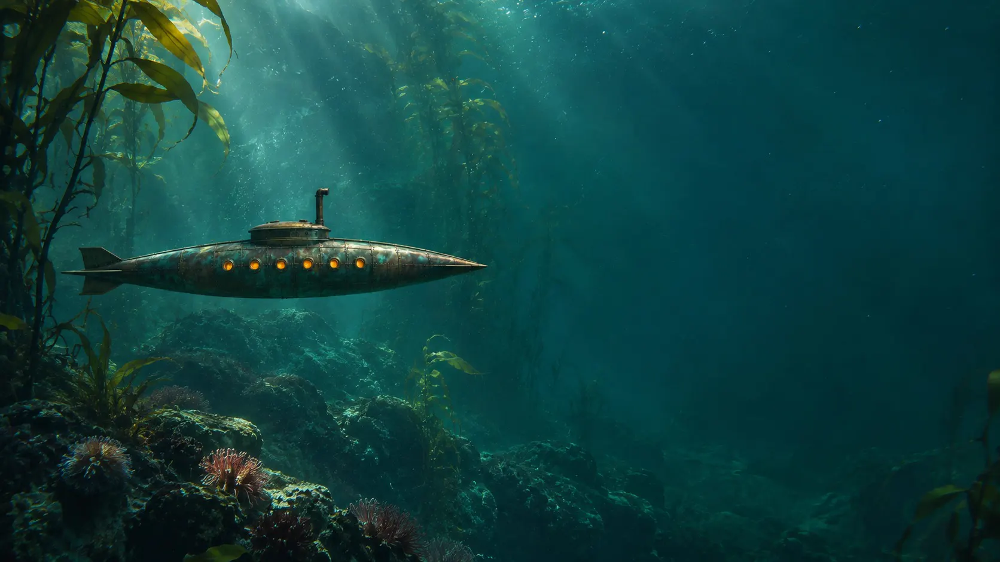
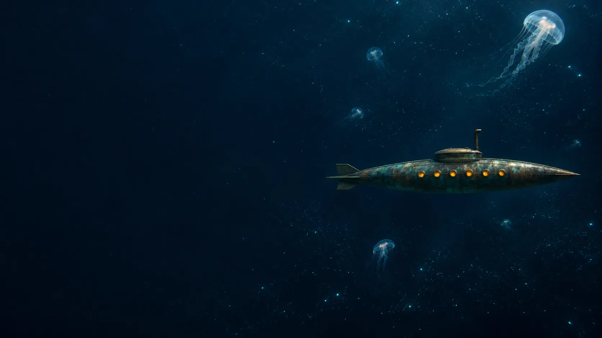
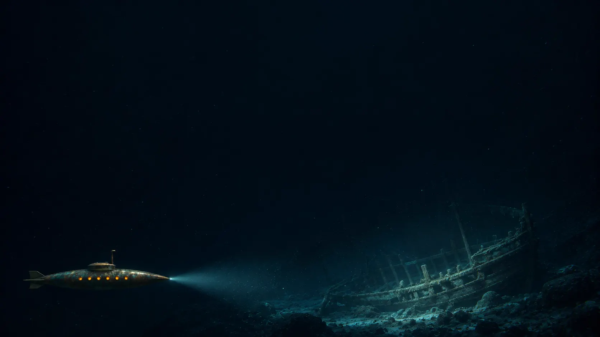

I. The invitation
The hatch closes. The last line of daylight slips away. Follow the Nautilus into a place that asks you to leave the familiar behind.
“The sea is everything.”Jules Verne · Part I, Chapter X · Project GutenbergContinue into the light

Leave the surface behind.
There is another world below.
AI-generated ocean plates.
Move your pointer to cast a light.
An atmospheric reading, not a reconstruction of the novel’s route. Depths are imaginative.
The hatch closes. The last line of daylight slips away. Follow the Nautilus into a place that asks you to leave the familiar behind.
“The sea is everything.”Jules Verne · Part I, Chapter X · Project GutenbergContinue into the light

A small vessel. An impossible expanse. In this imagined ocean, the dark is not empty: it is waiting to be illuminated.
“What a spectacle! What pen can describe it?”Jules Verne · Part I, Chapter XIII · Project GutenbergGo deeper

The world above becomes a memory. Here, the captain’s idea of freedom stretches as far as the beam of his searchlight.
“The sea does not belong to despots.”Jules Verne · Part I, Chapter X · Project GutenbergEnter the quiet

“There only is independence!”Jules Verne · Part I, Chapter X · Project Gutenberg
Our descent ends here. His voyage goes on.
Read the bookA public-domain literary world, built with original code—not a film adaptation. Four AI-generated photoreal underwater plates were made with ChatGPT image generation, retaining one original Victorian-style submarine silhouette throughout the descent. The hero reuses the first plate. Canvas water, particles and the pointer searchlight remain original code. The sound is an optional, synthesized engine hum. No film design, borrowed character art, music or repository code.
Following Divya’s Themed AI Website Repos, by Divya: inspect real themed projects, understand how their effects work, then reinterpret the techniques in a new world.
Batman repository — studied its React/Vite structure, Canvas pointer trail and compositing, Framer Motion staggered entrances, and dramatic display/body type contrast. Here, a pointer-driven searchlight discovers warm particles in the ocean; a staged title entrance gives the opening its rhythm.
stangerThings repository — studied its React/Vite components, eased pointer coordinates, layered radial reveal masks and large theatrical typography. Here, a softly edged light field reveals a second color of plankton over an original underwater scene.
Neither inspected site implements a loader, scroll chapters or sound. Those are not attributed to Divya. This remix adds chapter-driven ocean changes and opt-in Web Audio; it deliberately avoids an artificial loading screen.
Plain HTML/CSS and JavaScript replace the React/Vite component shell; native Web Animations replace Framer Motion’s entrance sequencing. Canvas 2D handles water, particles and interactive light above the photographs. Gemini Veo was attempted, but both JPEG and PNG reference uploads failed before generation. Motion therefore uses a gentle CSS slow-push and procedural Canvas light and particles, not generated video. All photographic imagery is AI-generated, not documentary footage. Reduced-motion mode and the pause control show still plates. No external runtime libraries are used.
Short quotations are transcribed from the public-domain English text of Project Gutenberg ebook #164; its catalog does not identify a translator. Narrative transitions are original writing. Bodoni Moda and Figtree are self-hosted under the SIL Open Font License (Bodoni, Figtree).